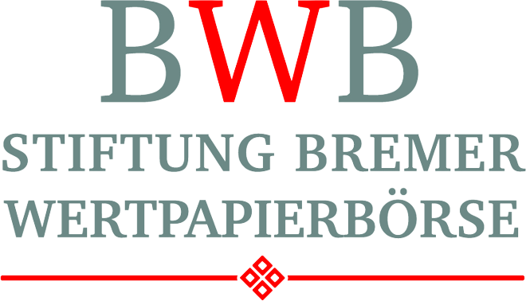
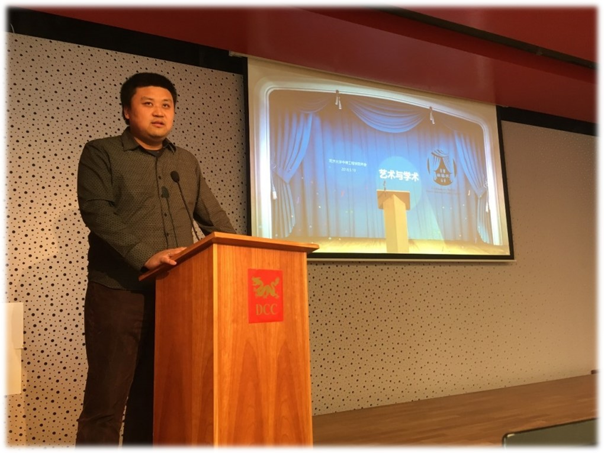
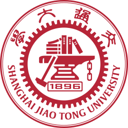

学术链接
|
|
个人学术主页@不来梅大学 |
| 0000-0002-6850-9570 | |
| GyLOsRwAAAAJ | |
| Hui-Liu-149 | |
| 57196004640 | |
| 2146672447 | |
| ACZ-9903-2022 | |
|
欢迎您将最新学术成果投稿： 《面向人体动作的传感器研究 卷II》 |
|
研究领域
| 生物医学工程 Biomedical Engineering (BME) |
● 康复学辅助技术 ● 关节炎治疗和膝盖护具 ● 辅助医疗的移动应用程序（APP） |
| 可穿戴式传感器 Wearables |
● （无线）生理传感器网络（WBSN/BSN） ● 体域网（BAN） ● 惯性传感器和惯性测量单元（IMU） ● 肌电传感器（EMG）和电子量角器 ● 其它生物传感器 ● 普适计算 ● 面部肌电图（fEMG）和动作单元识别（AUR） |
| 数字信号处理 Digital Signal Processing (DSP) |
● 多信道、多传感器生物医学信号处理 ● 预处理技术和特征提取 ● 时序信号处理 ● 开源时域、统计域和频域特征库开源 ● 生物医学信号和人机交互界面设计 |
| 大数据挖掘和信息检索 Big Data Mining (BDM) Information Retrieval (IR) |
● 多模数据可视化 ● 统计学大数据分析 ● 大数据采集的计划、组织和后处理 ● 自动和半自动数据分割与标定 ● 人体动作数据集开源 ● 子序列搜索算法开源 ● 自相关矩阵（SSM）和新颖性搜索 |
| 机器学习和人工智能 Machine Learning (ML) Artificial Intelligence (AI) |
● 特征选择 ● 特征降维 ● 早期融合和后期融合 ● 隐马尔可夫模型 (HMM) ● 各类人工神经网络 ● 模型训练、识别和评估 |
| 人体动作识别 Human Activity Recognition (HAR) |
● 提出人体动作识别研究总框架 HAR-Pipeline ● 全新人体动作建模法 Motion Units ● 人体生物信号采集、处理和识别软件开发 Activity Signal Kit (ASK) ● 移动端人体生物信号采集和识别界面 ASK MobilE (ASKME) ● 实时人体动作识别系统 ASK Echtzeit-Dekoder (ASKED) ● 即插即用的新动作识别 ASK Plug-and-PlAy (ASKPAPA) ● 内部传感和穿戴式计算 |
| 元宇宙和虚拟/增强/混合/扩展现实 Metaverse and Virtual Reality (VR) Augmented Reality (AR) Mixed and Extended Reality (MR/XR) |
● VR/AR/MR复健游戏开发 ASK Game Enginer (AGE) ● 元宇宙中人体生物信号的可视化采集、识别和应用 ● 利用可穿戴式传感器在MR/XR中进行控制和交互 |
| 音乐信息处理 Music Information Retrieval (MIR) |
● 旋律谱面特征提取 ● 基于MIR的业余演唱辅助 ● 谱面信息与音频信号的协同处理和研究 |
|
（ 研发出第一款可实时识别人体动作、提供医疗康复辅助的智能膝盖绷带 获第12届国际生物医学工程系统和技术联合会议  最佳论文奖（学生作者） 最佳论文奖（学生作者）
| |
论文发表
学术贡献
| 编委（医学和公共健康方向） |
● Frontiers in Big Data ● Frontiers in Artificial Intelligence |
| 编辑 |
● Frontiers in Behavioral Neuroscience |
| 特邀编委 |
● Sensors 专刊 Sensors for Human Activity Recognition: 卷I 卷II |
| 学术会议 Program Chair |
● BIOSIGNALS2024 - 17th International Conference on Bio-Inspired Systems and Signal Processing (in BIOSTEC 2024), Rome, Itaty |
| 学术会议 Session Chair |
● 15th International Conference on Health Informatics (in BIOSTEC 2022), Vienna, Austria ● 19th International Conference on Signal Processing and Multimedia Applications, Lisbon, Portugal ● 16th International Joint Conference on Biomedical Engineering Systems and Technologies, Lisbon, Portugal |
| 审稿人 |
● 38本国际期刊，包括Nat. Commun.、Biomed. Signal Process. Control、Remote Sens.、Front. Physiol.、Front Bioeng. Biotechnol.、Front. Med.、Physiol. Meas.、Phys. Scr.、 ISPRS Int. J. Geo-Inf.、Biomimetics、Biosensors ● 多个国际会议, 包括IEEE BSN, BHI; ACM ICMI, ISWC, AUTOMOTIVEUI; ITP ● IOP Trusted Reviewer 表彰“极其高水平的同行评审胜任力”（an exceptionally high level of peer review competency） |
 Arthrokinemat (2016 — 2019) |
● 主研德国联邦经济事务与气侯行动部（BMWi）Arthrokinemat项目 ● 康复工程中的集成传感器智能膝盖绷带 ● 已经成功结题 |
|  NF-BWB (2023 — 2025) |
● 主研德国不来梅证券基金会（BWB）资助的NF-BWB"青年英才培养"项目 ● 在多所高校普及人工智能和大数据，并举办竞赛 |
 IntEL4CoRo (2021 — 2025) |
● 主研德国联邦教育及研究部（BMBF）IntEL4CoRo项目 ● 智能机器人设计仿真教学平台 |
 ETAP (2022 — 2025) |
● 参与起草德国联邦卫生部（BMG）ETAP项目 ● 基于人工智能运动监测的长期护理中半自动化护理优化 |
欧洲青年研究型大学网络 |
● YERUN学者：科研流动奖金 |
葡萄牙新里斯本大学 |
● |
 Biosignals Notebooks |
● 传感器人工智能公益在线教程和代码开源 |
同济大学中德工程学院 德国杜塞尔多夫 2018 |
● 学术讲座：学术与艺术  |
第12届国际生物医学工 程系统和技术联合会议 捷克布拉格 2019 |
● 学术讲座：From Offline towards Real-Time |
 卡尔斯鲁厄理工学院（KIT） 适应性系统年度座谈会 德国卡尔斯鲁厄 2022 |
● 特邀技术展示 |
 第4届北德大数据竞赛 BBDC 2019 |
● （独立承担）大数据采集、处理和提供工作 ● 北德数十所高校的60多支队伍参加最后的角逐 |
产研活动
 不来梅人工智能展览会 德国不来梅 2019 |
● 技术演示：实时人体动作识别系统 ● 互动演示：MR（混合现实）康复辅助游戏平台 ● 举办地： |
|
“智慧头脑日”展览研讨会 德国不来梅 2021 |
● 技术演示：人工智能膝盖绷带 ● 举办地： |
|
 葡萄牙 PLUX 无线生物信号传感器公司 |
● 科技顾问 | |
 CAMPUSiDEEN 2022 商业创意大赛 |
● 公共选择奖 |
专业履历
 2001 — 2004 上海市市西中学 |
● 高中，期间获得： ● 全国青少年信息学奥林匹克联赛提高组一等奖 （证书编号：I030473） ● 上海市CASIO杯程序设计竞赛高中组一等奖 |
|
 2004 — 2007 上海交通大学 电子信息与电气工程学院 通信工程专业 |
● 本科学位 ● 上海交通大学奖学金（三年） |
 2007 — 2009 柏林工业大学 电子学与信息学系（四系） 信号传输专业 通信质量和适用性专业 机器视觉专业 |
● 第一硕士学位：Diplom-Ingenieur ● 课程平均分：1.0 ● 担任研究助理，于  弗劳恩霍夫协会赫兹通讯研究所 弗劳恩霍夫协会赫兹通讯研究所
|
|
2009 — 2011 上海交通大学 电子信息与电气工程学院 通信与信息系统专业 |

 ● 第二硕士学位：Master of Science ● 学积分/积点/GPA：3.16/3.3 ● GPA排名：1/106 ● 国家优秀研究生一等奖学金 |
2012 — 2013 柏林工业大学 |
● 科研助理 ● 柏林工业大学校长奖学金 |
 2014 — 2016 企业界工作 |
● 软件工程师 ● 负责集成开发项目 |
|
2016 — 2021 不来梅大学 数学和信息学系（三系） 认知系统实验室（CSL） |
● 科研项目和教学工作，2021年获工程学博士学位 ● 负责德国联邦经济事务和能源部 Arthrokinemat 项目 ● 研发首款实时识别人体动作、辅助康复的智能膝盖绷带 ● 最佳论文奖（学生作者）● 建立广泛和密切的合作关系：  保尔范运动护具公司等 保尔范运动护具公司等 |
|
2021年以来 不来梅大学 |
● 博士后研究员 |
教学工作
|
2022年以来 传感器和人体动作研究（英/德） |
● 课程负责人 ● 研讨会和学习指导 |
|
2022年以来 认知系统（德） |
● 合作教学 ● 研讨会和学习指导 |
|
2017年以来 生物医学信号和用户界面（德） |
● 课程组织和电子教学平台、部分授课任务 ● 习题课、线下和线上答疑 ● 试卷命题人、口试委员 ● 虚拟教学和线上同步指导负责人（疫情期间） |
|
2020 — 2021 机器学习导论（英） |
● 合作教学 ● 网络教学视频录制和制作（疫情期间） ● 负责聚类分析和聚类算法 |
|
2020 — 2021 科学工程实践: RobARinth（德） |
● 引导项目实践 ● 提供生物信号传感器技术指导 |
|
2016 — 2018 软件工程II（德） |
● 软件设计和软件工程教学 ● 指导小组实践 ● 组织参与客户会议和客户需求分析 ● 指导程序设计和代码优化 |
|
2010 — 2011 基本电路理论（英） |
● 助教 |
| 指导完成的有代表性的优秀本科、硕士毕业论文： |
| 指导的科研助理以及毕设学生列表 |
 指导的科研小组部分成员合影（2023） |